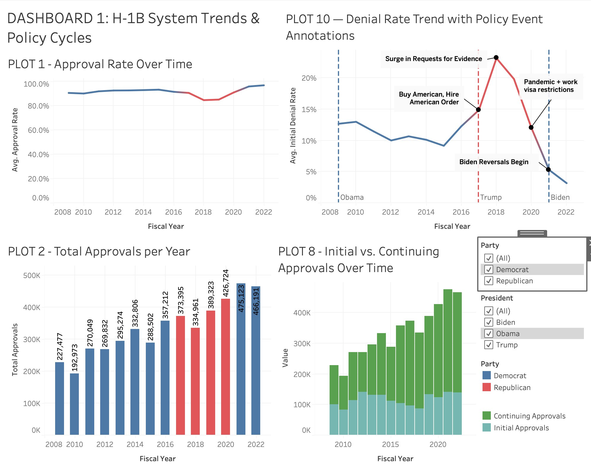
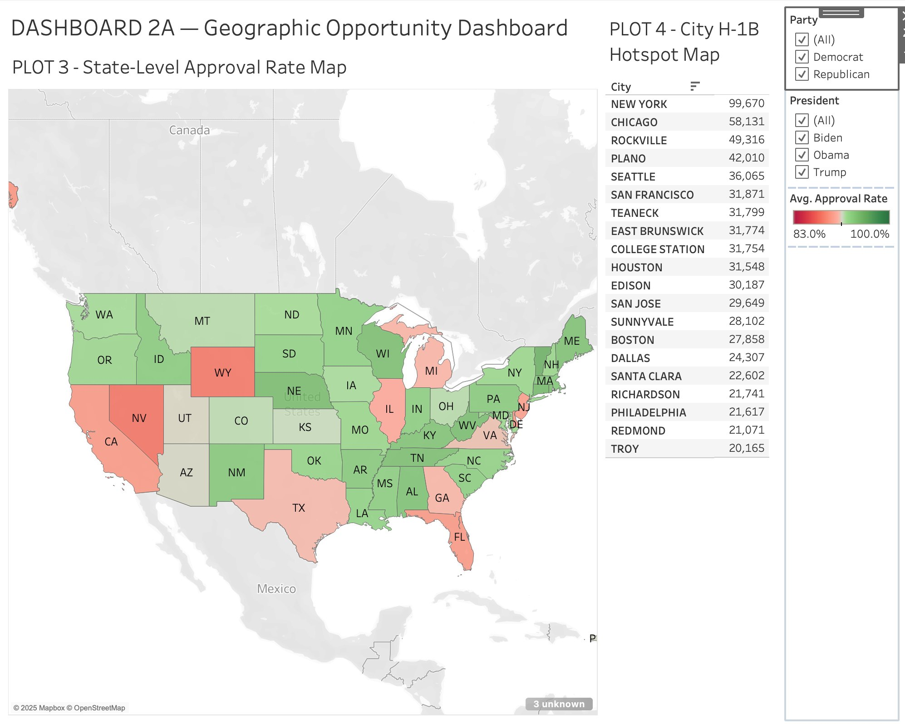
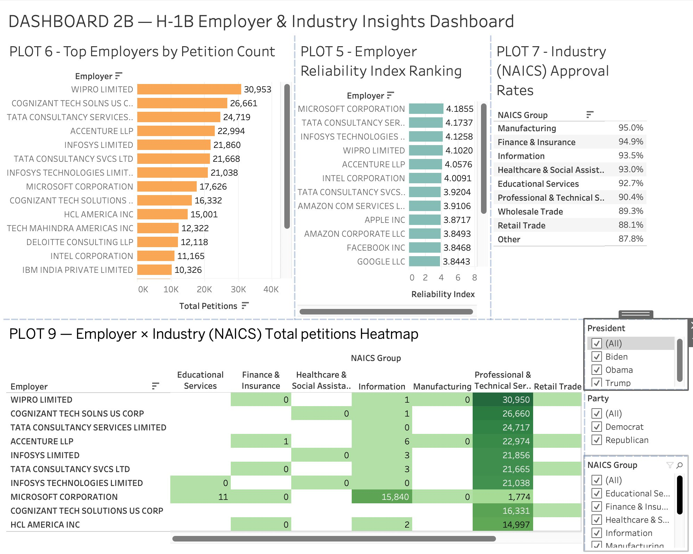

H-1B Sponsorship Insights Dashboards
Business Intelligence project in Tableau. Team of 5. I did the analytical modeling and designed the Policy Trends dashboard.
BI and data engineeringCompleted
01Problem
An HR director needs to know when sponsoring is risky, and an F-1 student needs to know which employers reliably sponsor. 14 years of USCIS files answer both, but not in their raw form.
02Approach
Merged 14 annual USCIS files (FY2009 to FY2022) in Python, cleaned state codes, then built three Tableau dashboards with calculated fields, FIXED LOD expressions and policy-event annotations.
03Impact
Showed new petitions are hit hardest when policy tightens, mapped approval rates by state and city, and replaced a misleading approval-rate ranking with a Reliability Index that favors large, consistent sponsors.
Results



What I did
- Policy Trends dashboard (mine): approval rate, total approvals, initial vs continuing approvals, and denial rate annotated with the 2017 executive order, the 2018 surge in evidence requests and 2020 restrictions.
- Employer Reliability Index = approval rate x log of petition volume, so a perfect record on 3 petitions no longer outranks a sponsor with 20,000.
- Grouped industries by 2-digit NAICS code and built an employer-by-industry heatmap.
Tools
TableauLOD expressionsPythonpandas